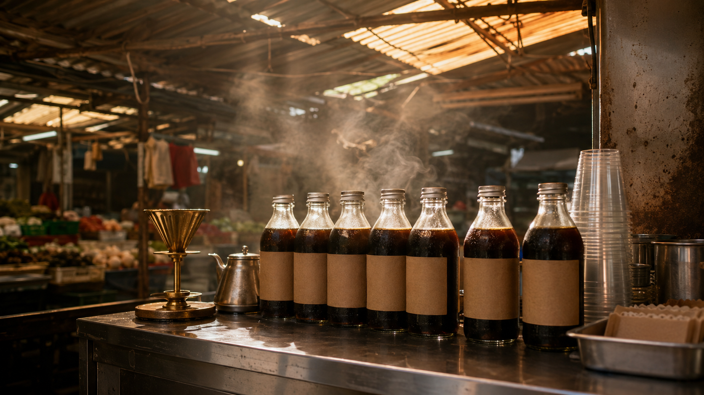
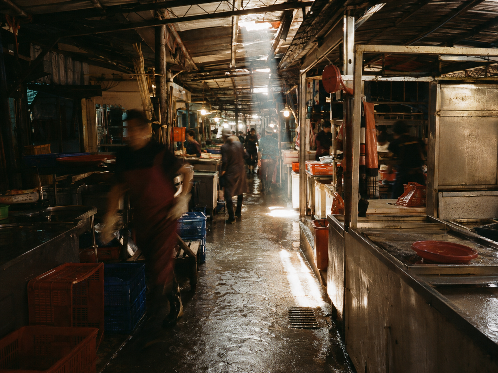
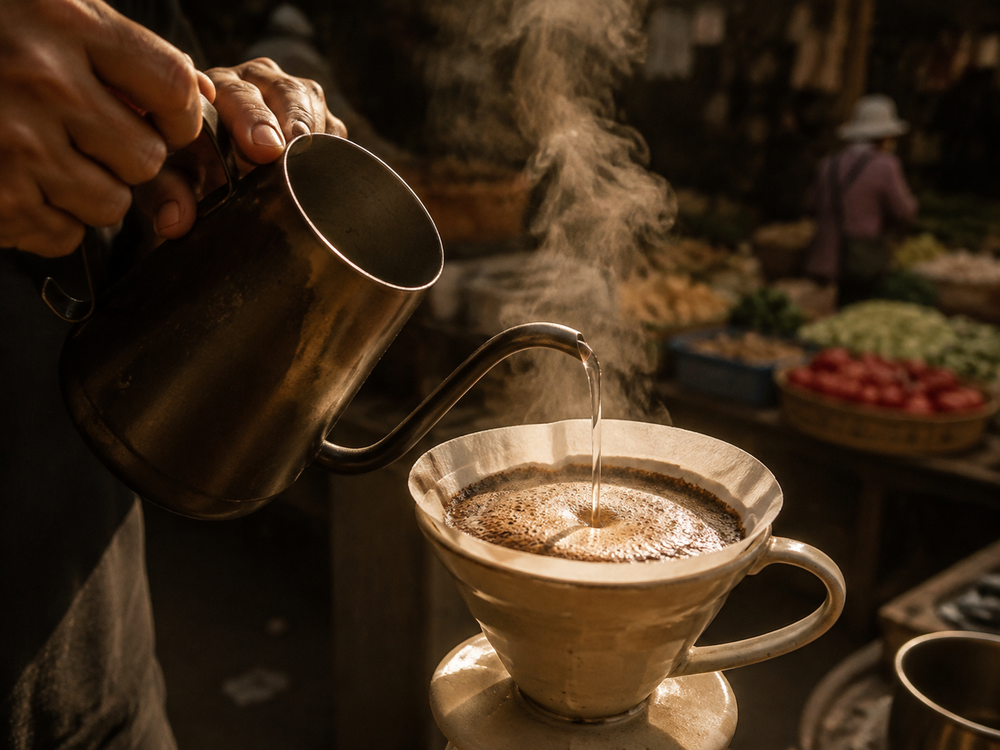
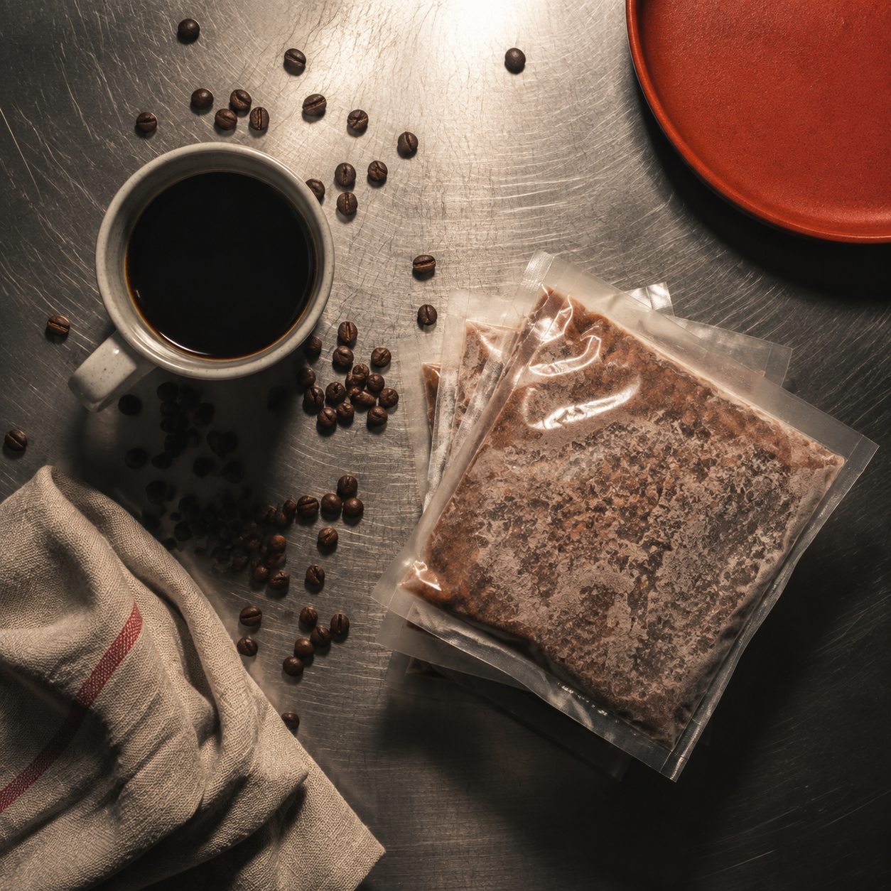

01 · 第一小時
第一滴，落在乾的粉床上
水珠沿著冰塊邊緣慢慢集結，遲疑很久才肯落下。粉床從中心開始變深、微微鼓起，整個攤子只聽得見那個聲音：一下，停很久，再一下。
台南 · 開元市場 · 1036 攤位
開元市場的清晨是有聲音的：鐵捲門一路拉開、魚攤的冰塊嘩啦倒下、菜販把青江菜疊成一座小山。1036 攤位就夾在魚跟菜的中間，沒有霓虹招牌，只有一排冰釀咖啡安安靜靜站著，等天光走進來。
我們不趕時間。冰釀要滴滿四個小時，手沖要等水溫剛剛好。你提著菜、拎著豆漿走過來，我們遞出一杯——熱的有熱的溫度，冰的有冰的耐性。

冰釀咖啡 · COLD DRIP
冰塊化成水，水一滴一滴穿過咖啡粉。沒有捷徑，也不能催。以下是這四個小時裡，攤子上真正發生的事。
01 · 第一小時
水珠沿著冰塊邊緣慢慢集結，遲疑很久才肯落下。粉床從中心開始變深、微微鼓起，整個攤子只聽得見那個聲音：一下，停很久，再一下。
02 · 第二小時
可可跟紅棗的甜味先浮上來，繞著玻璃壺打轉。這時候滴速穩成一種節拍，跟外頭剁排骨的聲音正好錯開。壺底的液體還很淺，像剛泡開的茶。
03 · 第三小時
琥珀轉成深栗，壺壁掛上一圈細細的油光。市場的人聲到了最吵的時候，這一壺卻越來越安靜——甜味站穩了，酸度自己退到後面去。
04 · 第四小時
最後一滴落定，冰塊全化完了。把它冰進瓶子，香氣就收在裡面。四個小時只換這一瓶，我們覺得划算——你喝一口就知道為什麼。
開元市場 · 1036



開市時間表 · OPENING HOURS
收攤時間依現場狀況微調 · 賣完為止